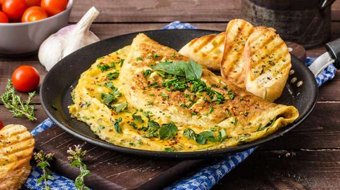

Herb Omelette With Chives And Oregano Sprinkled With Chili Flakes
Nullam luctus mi eget erat lobortis, quis interdum sem pellentesque. Aliquam erat volutpat. Mauris vulputate id felis ac interdum. In tincidunt gravida nibh sed cursus. Vivamus porta nisi malesuada, eleifend arcu non, efficitur tellus. Mauris laoreet tortor metus, ac hendrerit mi eleifend ut. Phasellus laoreet quam quam, quis eleifend nisl condimentum id. Suspendisse ut libe ro metus. Phasellus et nunc nec orci consequat posuere sed at sem.
Phasellus facilisis turpis dictum tellus tincidunt elementum. Nullam maximus facilisis accumsan. Praesent bibendum quis ipsum sit amet hendrerit.
Cooking Instructions
- First make the meatballs. Split the sausage skins and squeeze out the meat into your largest mixing bowl. Add the mince, onion, parsley, Parmesan, breadcrumbs, beaten eggs and lots of seasoning. Get your hands in and mix together really well – the more you squeeze and mash the mince, the more tender the meatballs will be.
- Heat oven to 220C/200C fan/gas 7
- Roll the mince mixture into about 50 golf-ball-size meatballs. Set aside any meatballs for freezing, allowing about 5 per portion, then spread the rest out in a large roasting tin – the meatballs will brown better if spaced out a bit
- Drizzle with a little oil (about 1 tsp per portion), shake to coat, then roast for 20-30 mins until browned.
- Meanwhile, make the sauce. Heat the oil in your largest pan. Add the garlic and sizzle for 1 min. Stir in the tomatoes, wine, if using, sugar, parsley and seasoning.
- Simmer for 15-20 mins until slightly thickened. Stir in the basil leaves, if using, spoon out any portions for freezing, then the cooked meatballs to the pan to keep warm while you boil the spaghetti.
- Spoon the sauce and meatballs over spaghetti, or stir them all together and serve with extra Parmesan and a few basil leaves, if you like.
Ingredients
| 8 pork sausages |
| 1kg beef mince |
| 1 onion, finely chopped |
| ½ a large bunch flat-leaf parsley, finely chopped |
| 85g parmesan, grated, plus extra to serve if you like |
| 100g fresh breadcrumbs |
| 2 eggs, beaten with a fork |
| olive oil, for roasting |
For The Sauce
| 3 tbsp olive oil |
| 4 garlic cloves, crushed |
| 4 x 400g cans chopped tomato |
| 125ml red wine (optional) |
| 3 tbsp caster sugar |
| ½ a large bunch flat-leaf parsley, finely chopped |
| few basil leaves (optional) |